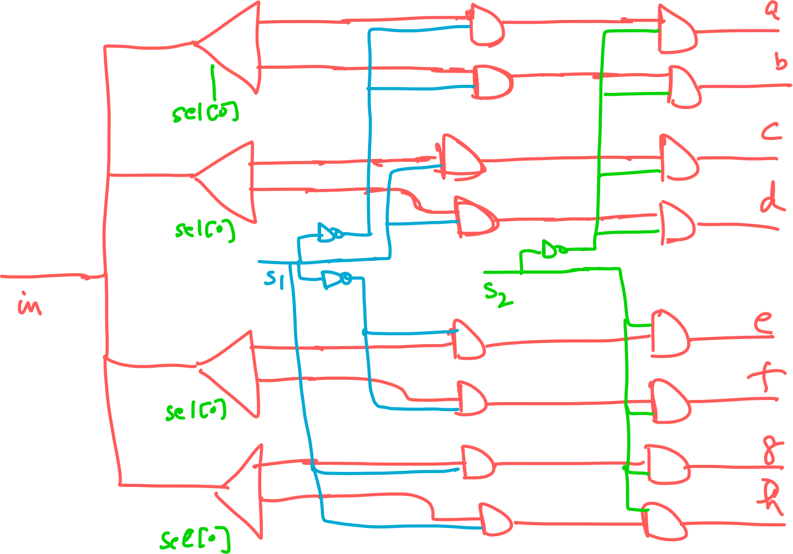

Boolean Functions and Gate Logic
Resources
Boolean Algebra

Truth Table to Boolean Expression
Generally, we know what a certain hardware unit needs to do, and we need a boolean expression that describes it. That is, we know the truth table of the unit, and need a boolean expression that implements it.
We can start by constructing a 'disjunctive normal form formula' for the truth table. For example, if we want the boolean expression for the following table:

we'll go through the table row by row, and for every row with an output of 1, write an expression that results in a 1 just for this row. That is, for the first row, we get:

We'll write expressions for each of the rows with output 1, and OR them all.
Finally, we'll end up with an expression like this:

This expression can be simplified further using boolean algebra.
Basic Building Block
As we can see above, any boolean function can be represented using an
expression containing AND, OR, and NOT operations. But, we don't really need
OR, as it can be constructed with AND, and NOT operations:
(x OR y) = NOT(NOT(x) AND NOT(y))!!! info "Key takeaway"
Every boolean expression can be represented with AND and NOT
operations.
This leads us to think about the following question:
!!! note "Question" Is there a operation that can be used as a building block for any boolean expression?
The answer to the question is the NAND operation.
NAND

The NAND operation can be used to build NOT and AND as follows:
NOT(x) = (x NAND x)
(x AND y) = NOT(x NAND y)Logic Gates
A gate has an interface and an implementation.
- Interface: WHAT is the gate supposed to do?
- Implementation: HOW is the gate doing it?

Hardware Description Language

Project 1
Given NAND:
Build the following gates:
- Elementary
- Not
- And
- Or
- Xor
- Mux
- DMux
- 16 bit variants
- Not16
- And16
- Or16
- Mux16
- Multi-way variants
- Or8Way
- Mux4Way16
- Mux8Way16
- DMux4Way
- DMux8Way
Xor
(x OR y) = NOT(NOT(x) AND NOT(y))CHIP Xor {
IN a, b;
OUT out;
PARTS:
Not (in=a, out=nota);
Not (in=b, out=notb);
And (a=a, b=notb, out=x);
And (a=nota, b=b, out=y);
Or (a=x, b=y, out=out);
}Mux
A multiplexor is a three-input gate that uses one of the inputs, called ‘selection bit,’ to select and output one of the other two inputs, called ‘data bits.’ The name multiplexor was adopted from communications systems, where similar devices are used to serialize (multiplex) several input signals over a single output wire.
![[Image]](/knowledge/84a544ffd3be3e80c11c05e2532949da/mux.png)
A mux can be represented as:
(a AND NOT sel) OR (b AND sel)CHIP Mux {
IN a, b, sel;
OUT out;
PARTS:
Not(in=sel, out=notSel);
And(a=a, b=notSel, out=aAndNotSel);
And(a=b, b=sel, out=bAndSel);
Or(a=aAndNotSel, b=bAndSel, out=out);
}DMux
A demultiplexor performs the opposite function of a multiplexor: It takes a single input and channels it to one of two possible outputs according to a selector bit that specifies which output to chose.

a and b can be represented as:
a = in AND NOT sel
b = in AND selCHIP DMux {
IN in, sel;
OUT a, b;
PARTS:
Not(in=sel, out=notSel);
And(a=in, b=notSel, out=a);
And(a=in, b=sel, out=b);
}Mux16
CHIP Mux16 {
IN a[16], b[16], sel;
OUT out[16];
PARTS:
Mux(a=a[0], b=b[0], sel=sel, out=out[0]);
Mux(a=a[1], b=b[1], sel=sel, out=out[1]);
Mux(a=a[2], b=b[2], sel=sel, out=out[2]);
Mux(a=a[3], b=b[3], sel=sel, out=out[3]);
Mux(a=a[4], b=b[4], sel=sel, out=out[4]);
Mux(a=a[5], b=b[5], sel=sel, out=out[5]);
Mux(a=a[6], b=b[6], sel=sel, out=out[6]);
Mux(a=a[7], b=b[7], sel=sel, out=out[7]);
Mux(a=a[8], b=b[8], sel=sel, out=out[8]);
Mux(a=a[9], b=b[9], sel=sel, out=out[9]);
Mux(a=a[10], b=b[10], sel=sel, out=out[10]);
Mux(a=a[11], b=b[11], sel=sel, out=out[11]);
Mux(a=a[12], b=b[12], sel=sel, out=out[12]);
Mux(a=a[13], b=b[13], sel=sel, out=out[13]);
Mux(a=a[14], b=b[14], sel=sel, out=out[14]);
Mux(a=a[15], b=b[15], sel=sel, out=out[15]);Mux4Way16

Chip name: Mux4Way16
Inputs: a[16], b[16], c[16], d[16], sel[2]
Outputs: out[16]
Function: If sel=00 then out=a else if sel=01 then out=b else if sel=10 then
out=c else if sel=11 then out=d
Comment: The assignment operations mentioned
above are all 16-bit. For example, "out=a" means "for i=0..15 out[i]=a[i]".CHIP Mux4Way16 {
IN a[16], b[16], c[16], d[16], sel[2];
OUT out[16];
PARTS:
Mux16(a=a, b=b, sel=sel[0], out=Mux1Out);
Mux16(a=c, b=d, sel=sel[0], out=Mux2Out);
Mux16(a=Mux1Out, b=Mux2Out, sel=sel[1], out=out);
}Mux8Way16
CHIP Mux8Way16 {
IN a[16], b[16], c[16], d[16],
e[16], f[16], g[16], h[16],
sel[3];
OUT out[16];
PARTS:
Mux16(a=a, b=b, sel=sel[0], out=Mux1Out);
Mux16(a=c, b=d, sel=sel[0], out=Mux2Out);
Mux16(a=e, b=f, sel=sel[0], out=Mux3Out);
Mux16(a=g, b=h, sel=sel[0], out=Mux4Out);
Mux4Way16(a=Mux1Out, b=Mux2Out, c=Mux3Out, d=Mux4Out, sel=sel[1..2],
out=out);
}Dmux4Way

Chip name: DMux4Way
Inputs: in, sel[2]
Outputs: a, b, c, d
Function: If sel=00 then {a=in, b=c=d=0}
else if sel=01 then {b=in, a=c=d=0}
else if sel=10 then {c=in, a=b=d=0}
else if sel=11 then {d=in, a=b=c=0}.CHIP DMux4Way {
IN in, sel[2];
OUT a, b, c, d;
PARTS:
DMux(in=in, sel=sel[0], a=Dmux1A, b=Dmux1B);
DMux(in=in, sel=sel[0], a=Dmux1C, b=Dmux1D);
Not(in=sel[1], out=notSel1);
And(a=Dmux1A, b=notSel1, out=a);
And(a=Dmux1B, b=notSel1, out=b);
And(a=Dmux1C, b=sel[1], out=c);
And(a=Dmux1D, b=sel[1], out=d);
}DMux8Way
CHIP DMux8Way {
IN in, sel[3];
OUT a, b, c, d, e, f, g, h;
PARTS:
Not(in=sel[2], out=notSel2);
DMux4Way(in=in, sel=sel[0..1], a=aInt, b=bInt, c=cInt, d=dInt);
DMux4Way(in=in, sel=sel[0..1], a=eInt, b=fInt, c=gInt, d=hInt);
And(a=aInt, b=notSel2, out=a);
And(a=bInt, b=notSel2, out=b);
And(a=cInt, b=notSel2, out=c);
And(a=dInt, b=notSel2, out=d);
And(a=eInt, b=sel[2], out=e);
And(a=fInt, b=sel[2], out=f);
And(a=gInt, b=sel[2], out=g);
And(a=hInt, b=sel[2], out=h);
}